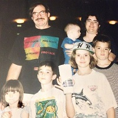
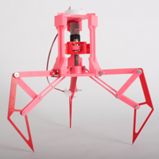
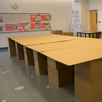
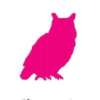

About Me

I am a junior attending school at Franklin W. Olin College located in Needham, MA. I am majoring in General Engineering with a focus in Engineering Design, but am a Mechanical Engineer at heart. I was born and raised in Houston, Texas and am fifth of seven children. My passions include photography, design, ultimate frisbee, music, and Texas.
-

1994-2013
Growing Up
I grew up in Houston, TX, attending high school at Strake Jesuit College Preparatory. It was at this school that I was able to fully realize my passion for engineering through our engineering team, Spectrum, which participated in VEX and FIRST Robotics. Through my courses I developed a strong engineering foundation to pursue this passion at Olin College.
-

2013-2014
First Year at Olin
Olin College threw me right into projects. Through such courses as Design Nature, The Digital Eye: An Introduction to Digital Photography, Mechanical Prototyping, and Software Design, I was able to produce intriguing work while realizing new passions. Digital Photography and Ultimate Frisbee were two new experiences for me, and ones that I truly enjoyed and have pursued extensively since. During this year, I learned the importance of rapid prototyping and iteration to output the most refined product possible.
-

2014-2015
My Meet Cute with Design
While redesigning the Principles of Engineering classroom, I fell in love with design. It was a subject that I had not put much thought into before, but suddenly I was up to my ears in design concepts, especially those surrounding furniture and spaces. A Spring course, Designing Resources for Empowerment and Making, DREAM, allowed me to start seeing how design can empower those who were underprivileged and/or in need.
-

Summer 2015
Olin's Workshop on the Library
During the summer of 2015, I was given the opportunity to be on a team tasked with starting to redesign the Olin College Library. Using small, experimental projects, we aimed to have the library better reflect Olin's unique culture, while trying to fill any gaps that we felt the campus needed but did not yet have. We created a space that more Oliners are inclined to visit and use.
-
An Exciting
Future
Ahead!